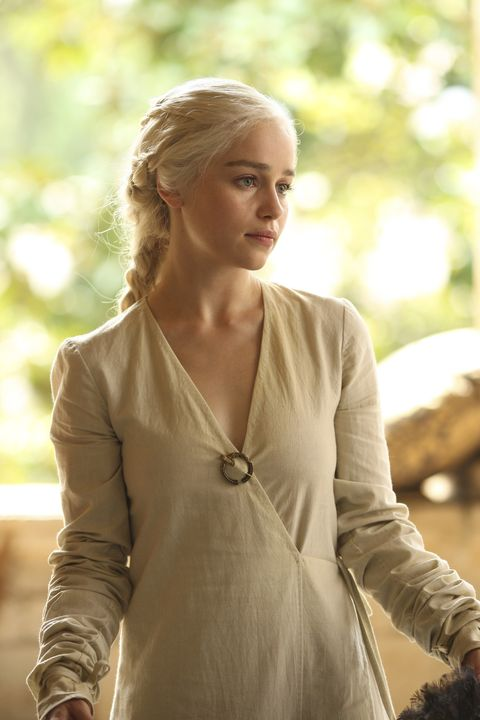
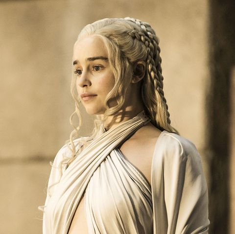

Daenerys Targaryen
Queen Daenerys I Targaryen, also known as Daenerys Stormborn, and colloquially known as Dany, was the de facto Queen of the Andals and the First Men and the twenty-first ruler of the Seven Kingdoms, the Khaleesi of the Great Grass Sea, and the Queen of Meereen. She is the younger sister of Rhaegar Targaryen and Viserys Targaryen and only daughter of King Aerys II Targaryen and Queen Rhaella Targaryen, who were both ousted from the Iron Throne during Robert's Rebellion.
As a baby, she fled Westeros with her brother Viserys Targaryen to the Free Cities of Essos Daenerys was initially a timid, obedient youth. After her marriage to Drogo she gathered the confidence of his Khalasar. Following his death, she expanded her dominion into Essos, as she conquered the city of Meereen and became the leader of the Unsullied.
In her conquest of Westeros, Daenerys eventually succumbed to the "Targaryen madness" of her ancestors after a series of terrible personal losses, grief, and betrayal. Razing King's Landing despite its surrender, Daenerys seized power after killing Queen Cersei Lannister along with countless civilians. Unable to be dissuaded from further destruction, she was assassinated by her nephew Jon Snow to prevent further carnage. She was eventually succeeded by Bran the Broken (an elective monarch chosen by the Great Council of 305 AC)
She formally styled herself as Daenerys Stormborn of House Targaryen, the First of Her Name, Queen of the Andals and the First Men, Protector of the Seven Kingdoms, the Mother of Dragons, the Khaleesi of the Great Grass Sea, the Unburnt, the Breaker of Chains, though the style was occasionally shortened to Daenerys of the House Targaryen, the First of Her Name, Breaker of Chains and Mother of Dragons.

Biography
Daenerys is the only daughter and youngest child of King Aerys II Targaryen, the "Mad King", and his sister-wife, Rhaella. Her father died during the Sack of King's Landing before she was even born. The usurper Robert Baratheon installed himself as king, having defeated Aerys in the conquest known as Robert's Rebellion. Her pregnant mother and brother Viserys, fled to the island of Dragonstone, the ancestral home of House Targaryen, to escape Robert. Daenerys's brother Rhaegar Targaryen was killed in the war by Robert. The forces of House Lannister murdered Rhaegar's wife, Elia Martell, and their children, Rhaenys and Aegon, during the Sack of King's Landing.
But unbeknownst to Daenerys and the rest of her family, her oldest brother Rhaegar had another son by Lyanna Stark, who died shortly after giving birth to him. In her final moments, she revealed the true name of their son, Aegon Targaryen, to her brother Eddard. To protect his sister's son, Eddard claimed the baby as his illegitimate son and named him Jon,[4] who would grow up to be known as Jon Snow. Eddard raised Jon as his own child in Winterfell and Jon grew up with his maternal side of the family. Jon initially joined the Night's Watch but later became the King in the North.
On the night Daenerys was born on Dragonstone, a severe summer storm raged. For this reason, she is sometimes called "Daenerys Stormborn." Her mother died soon after she was born, leaving Daenerys an orphan
As a baby, she was taken into exile in the Free Cities with her brother, Viserys, by loyal retainers, among them Ser Willem Darry.[3][7][8] After years spent fruitlessly trying to raise support to retake the Iron Throne, Viserys and Daenerys were given sanctuary by Magister Illyrio Mopatis in the Free City of Pentos. She dreams of finding a peaceful home and a place to belong to. Daenerys lives in constant fear of Viserys, who hits her when his temper is risen (in his words, whenever she "wakes the dragon"). Living under Viserys's domination has left her meek and malleable.
Personality
Daenerys was polite and well-spoken, but filled with quiet determination. As a child and young woman she was easily cowed by her brother's ambitions and occasional cruel rages. She was also somewhat naive of the world at that point, due to being young and living her life as an exile (with only her petulant brother to rely on for knowledge), but her time amongst the Dothraki taught her pride, confidence, and the skills of command. At the same time, her own intelligence began to manifest, and she was quick to understand that she was now free to pursue her own path.
Daenerys spent her entire early life living on the sufferance of others, bouncing back and forth between benefactors (like Illyrio Mopatis) with her brother, until whatever dreams those benefactors had of supporting the siblings' claim to the Iron Throne wore off, and they were forced to move on to another patron. As a result, Daenerys never knew a true home, and constantly living under her brother's domination gave her great empathy with the downtrodden of the world: she was deeply sympathetic to those she perceived as oppressed, while at the same time, her pent-up frustration from years of being dominated by her petty would-be-king of a brother made Daenerys capable of utter ruthlessness against those she perceived as oppressing others. This experience caused Daenerys to develop a largely black-and-white worldview, and she could be idealistic to a fault: upon seeing the plight of the slaves in Slaver's Bay, Daenerys became determined to free all the slaves in the region, with little thought devoted to the practical after-effects which would result from such an action and without thinking that between some slaves and their masters could exist respect or even love. A particular example of this is when the Great Masters of Meereen crucified 163 children as she approached the city in an attempt to intimidate her. After she took the city, instead of pardoning the slave-masters, she had 163 of them crucified in retribution, including many who opposed the crucifixion of the children, unconcerned about any negative political fallout which would result.
Titles
Daenerys is the second member of the Targaryen dynasty to bear her name. The first Daenerys was the sister of King Daeron II, who lived a century before Daenerys Stormborn. The earlier Daenerys wed into House Martell as part of the marriage-alliance, earning her the moniker "Daenerys of Sunspear", which at last united Dorne with the rest of the realm. Since Daenerys of Sunspear did not rule as a queen regnant, Daenerys Stormborn is not called "Daenerys II." When Daenerys Stormborn proclaims herself the rightful heir of the Targaryen dynasty, she is styled officially as "Daenerys of the House Targaryen, the First of Her Name" (Xaro is the first to address her by that title[23]). Daenerys is quite fond of her "Stormborn" sobriquet, however, and frequently substitutes it for "First of Her Name."
According to Missandei, Daenerys's full title is "Daenerys Stormborn of House Targaryen, rightful heir to the Iron Throne, rightful Queen of the Andals and the First Men, Protector of the Seven Kingdoms, the Mother of Dragons, the Khaleesi of the Great Grass Sea, the Unburnt, the Breaker of Chains." She formerly used the full title of "Queen of the Andals, the Rhoynar, and the First Men" alongside her past title of Queen of Meereen.
